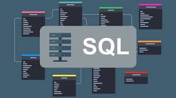
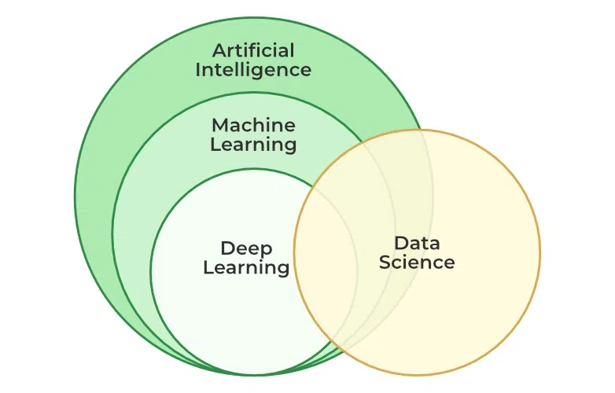
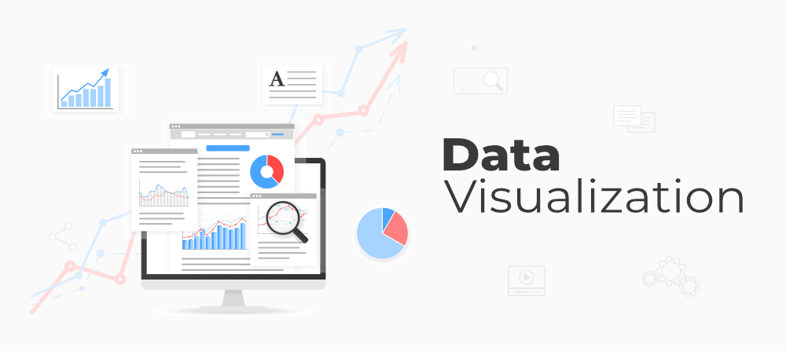

Skills & Technologies
Engineering-grade data, AI, and backend systems — from raw pipelines to hosted, agent-driven products.

Python
Pandas, NumPy, scikit-learn, PySpark, asyncio. ETL pipelines, ML workflows, and agent logic.

SQL & NoSQL
PostgreSQL, MySQL, MongoDB. Schema design, query optimization, and indexing for production workloads.

Data Science & ML
Statistical modeling, KMeans, classification, regression, forecasting. SAS, Databricks, scikit-learn.

BI & Visualization
Power BI, Tableau, Plotly, Matplotlib. Executive dashboards and narrative-driven insights.
LLMs & RAG
LlamaIndex, LangChain, hybrid BM25+vector retrieval, cross-encoder reranking, citation-required prompting.
Agentic AI
LangGraph, Smolagents, tool/function calling, multi-LLM orchestration with judge arbitration.
Backend & APIs
FastAPI, Express.js, REST design, auth, audit logging, maker-checker controls, double-entry accounting.
Cloud & DevOps
AWS, Docker, Kubernetes, Nginx, CI/CD, Hugging Face Spaces. WSL2 + CUDA for local LLM hosting.